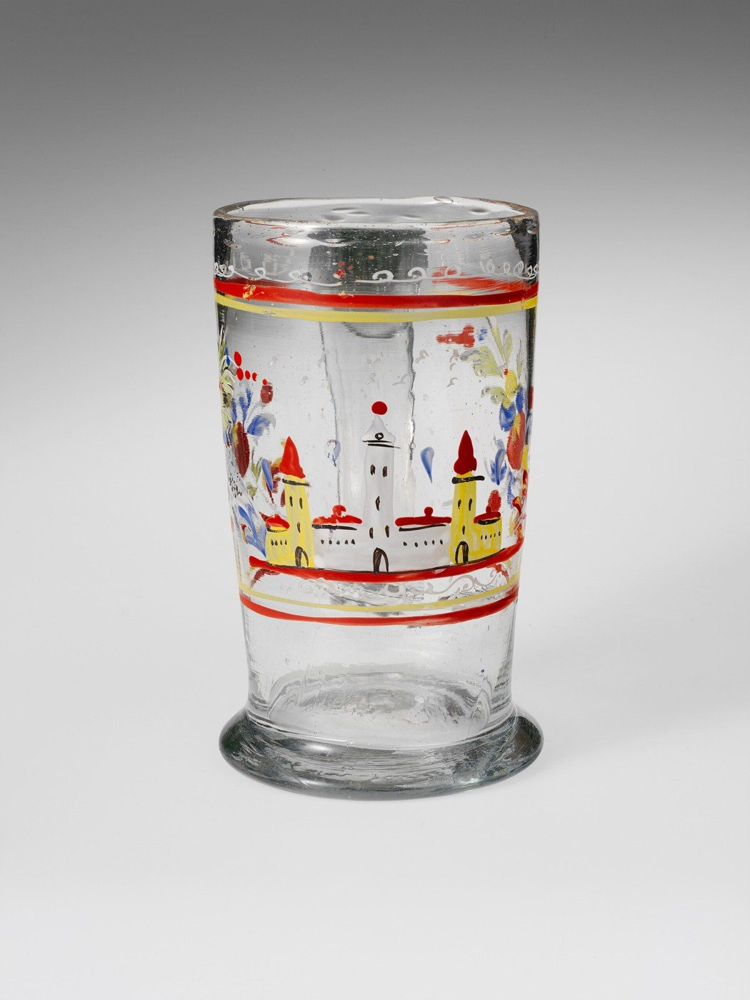

3 ネック・4 肩
お店のこと
「3 ネック」「4 肩」の受け持ちです。お店のこと・こだわりなどの詳細は準備中。わかっている情報だけを載せています。


3 ネック(ねっく)
ネックは、中身と外をつなぐところ
ネックは、瓶の細くなった首の部分です。お店と、このページを見る方とをつなぐ場所として、ご紹介の入口に見立てました。


4 肩(かた)
肩は、広がっていく途中のカーブ
肩は、首から胴へと広がる部分です。お店の情報は、ご提供をいただきながら少しずつ広げていきます。現時点で確認できているのは次の項目だけです。
| 店名 | 金木屋ベーカリー |
|---|---|
| 業種 | パン(ベーカリー) |
| 所在地 | 〒374-0047 群馬県館林市野辺町166-1 |
| 電話 | 準備中 |
| 営業時間・定休日 | 準備中 |
| @kanekiyabakery |